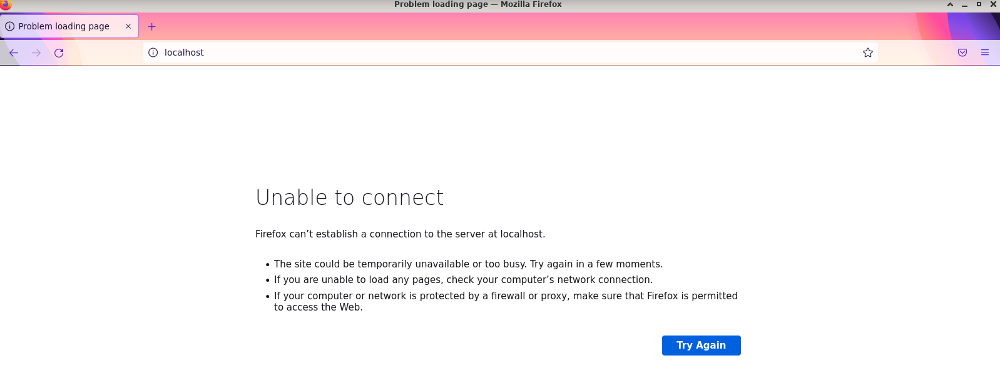
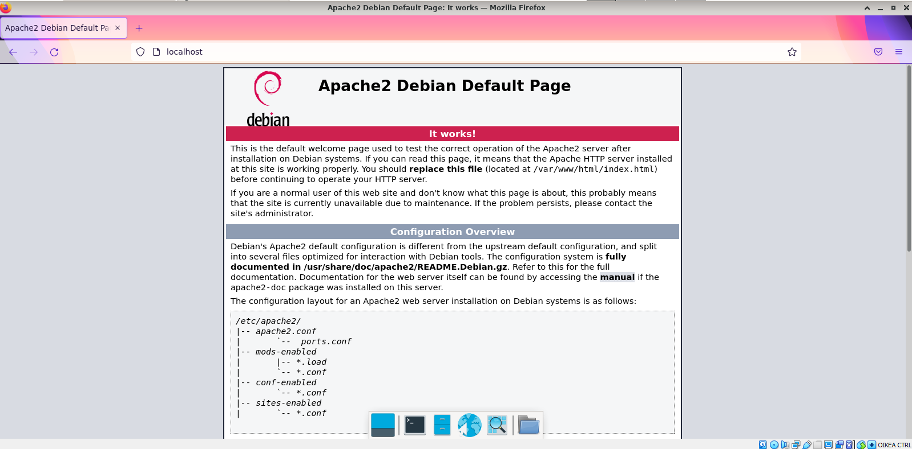
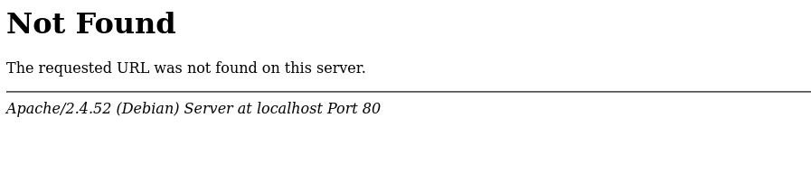
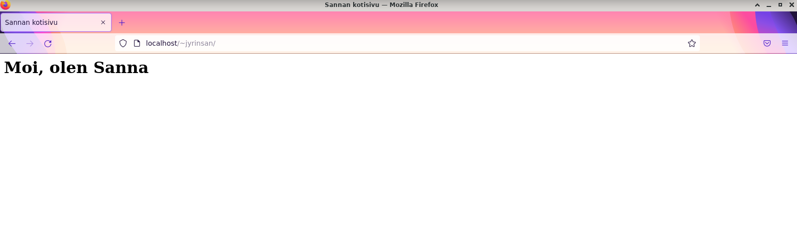
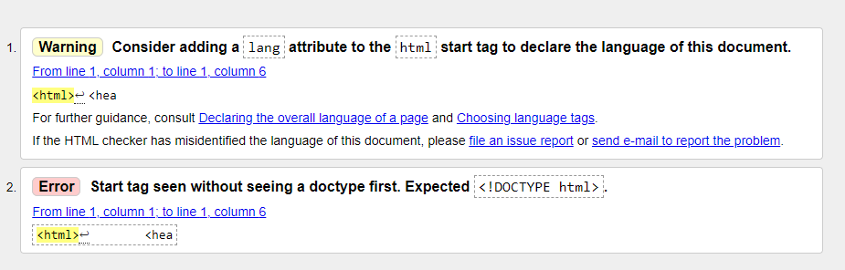
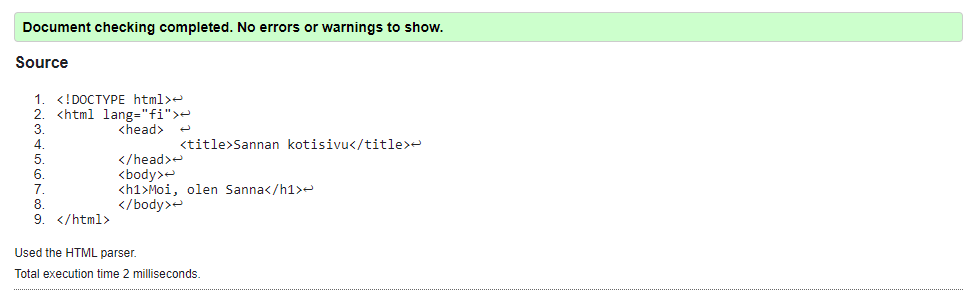
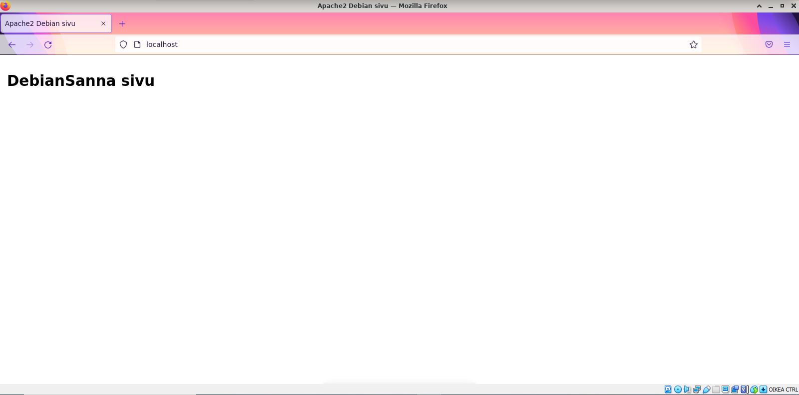

Karvinen, T. 2008. Install Apache Web Server on Ubuntu. Luettavissa https://terokarvinen.com/2008/install-apache-web-server-on-ubuntu-4/. Luettu 6.2.2022.
Kaufman, L. 2017. How to Uninstall Software Using the Command Line in Linux. Luettavissa https://www.howtogeek.com/229699/how-to-uninstall-software-using-the-command-line-in-linux/. Luettu 6.2.2022.
W3C. n.a. Markup Validation Service. Luettavissa https://validator.w3.org/. Luettu 6.2.2022.
Wikipedia. n.a. Luettelo HTTP-tilakoodeista. Luettavissa https://fi.wikipedia.org/wiki/Luettelo_HTTP-tilakoodeista. Luettu 6.2.2022.
Viime tunnilla asennettiin apache ja laitettiin oma webbisivu toimimaan, mutta koska olen epävarma osaanko hoitaa homman uudelleen, päätin aloittaa alusta. Ensin poistin apachen, googlaamalla löysin Kaufmanin (2017) ohjeen tähän, käytin --purge vipua, joka poistaa myös konfigurointitiedostot.
sudo apt-get --purge remove apache2
Käskyn ajaminen ilmoitti lopussa
dpkg: warning: while removing apache2, directory '/var/www/html' not empty so not removed
Joten poistin vielä html-hakemiston
cd /var/www
sudo rm -r html
Testasin, ettei selaimessa localhost löydy
Asennuksessa seurasin Karvisen (2007) ohjetta. Apachen asennus onnistuu seuraavasti
jyrinsan@sanna-virtualbox:~$ sudo apt-get -y install apache2
Reading package lists... Done
Building dependency tree... Done
Reading state information... Done
The following packages were automatically installed and are no longer required:
libc-ares2 libjs-highlight.js
Use 'sudo apt autoremove' to remove them.
Suggested packages:
apache2-doc apache2-suexec-pristine | apache2-suexec-custom
The following NEW packages will be installed:
apache2
0 upgraded, 1 newly installed, 0 to remove and 3 not upgraded.
Need to get 0 B/272 kB of archives.
After this operation, 635 kB of additional disk space will be used.
Selecting previously unselected package apache2.
(Reading database ... 244128 files and directories currently installed.)
Preparing to unpack .../apache2_2.4.52-1~deb11u2_amd64.deb ...
Unpacking apache2 (2.4.52-1~deb11u2) ...
Setting up apache2 (2.4.52-1~deb11u2) ...
Enabling module mpm_event.
Enabling module authz_core.
Enabling module authz_host.
Enabling module authn_core.
Enabling module auth_basic.
Enabling module access_compat.
Enabling module authn_file.
Enabling module authz_user.
Enabling module alias.
Enabling module dir.
Enabling module autoindex.
Enabling module env.
Enabling module mime.
Enabling module negotiation.
Enabling module setenvif.
Enabling module filter.
Enabling module deflate.
Enabling module status.
Enabling module reqtimeout.
Enabling conf charset.
Enabling conf localized-error-pages.
Enabling conf other-vhosts-access-log.
Enabling conf security.
Enabling conf serve-cgi-bin.
Enabling site 000-default.
invoke-rc.d: policy-rc.d denied execution of start.
Created symlink /etc/systemd/system/multi-user.target.wants/apache2.service → /lib/systemd/system/apache2.service.
/usr/sbin/policy-rc.d returned 101, not running 'start apache2.service'
Created symlink /etc/systemd/system/multi-user.target.wants/apache-htcacheclean.service → /lib/systemd/system/apache-htcacheclean.service.
/usr/sbin/policy-rc.d returned 101, not running 'start apache-htcacheclean.service'
Processing triggers for man-db (2.9.4-2) ...
jyrinsan@sanna-virtualbox:~$
Lopusta selviää, ettei apache ole jostain syystä käynnistynyt itsestään, eikä selain näytä edelleen mitään localhostissa. Kokeilen buutata debianin. Buuttaamisen jälkeen apachen testisivu näkyy hienosti selaimen localhost osoitteessa
Luon hakemiston kotisivulleni omaan kotihakemistooni
jyrinsan@sanna-virtualbox:~$ mkdir public_html
jyrinsan@sanna-virtualbox:~$ cd public_html/
jyrinsan@sanna-virtualbox:~/public_html$ micro index.html
index.html sisältö
<html>
<head>
<title>Sannan kotisivu</title>
</head>
<body>
<h1>Moi, olen Sanna</h1>
</body>
</html>
Kotisivu ei kuitenkaan vielä näy http://localhost/~jyrinsan osoitteessa
Huomasin Karvisen (2007) ohjeesta, että pitää ajaa seuraavat käskyt, jotta userdir module aktivoituu
sudo a2enmod userdir
sudo service apache2 restart
Näiden jälkeen kotisivuni näkyy
Testataan tekemäni html sivun validisuus W3C:n validaattorilla
Korjataan sivu tulosten perusteella seuraavanlaiseksi
<!DOCTYPE html>
<html lang="fi">
<head>
<title>Sannan kotisivu</title>
</head>
<body>
<h1>Moi, olen Sanna</h1>
</body>
</html>
Nyt sivu läpäisee validaattorin
Apachen lokit löytyvät täältä
cd /var/log
sudo su
cd apache2
access.log lokilla näkyy tekemiäni pyyntöjä
127.0.0.1 - - [06/Feb/2022:13:45:08 +0200] "GET / HTTP/1.1" 200 682 "-" "Mozilla/5.0 (X11; Linux x86_64; rv:91.0) Gecko/20100101 Firefox/91.0"
127.0.0.1 - - [06/Feb/2022:13:45:37 +0200] "GET /~jyrinsan/ HTTP/1.1" 200 461 "-" "Mozilla/5.0 (X11; Linux x86_64; rv:91.0) Gecko/20100101 Firefox/91.0"
127.0.0.1 - - [06/Feb/2022:13:45:53 +0200] "GET /~jyrinsan/index.html HTTP/1.1" 200 461 "-" "Mozilla/5.0 (X11; Linux x86_64; rv:91.0) Gecko/20100101 Firefox/91.0"
127.0.0.1 - - [06/Feb/2022:13:46:15 +0200] "GET /~jyrinsan/sivu.html HTTP/1.1" 404 488 "-" "Mozilla/5.0 (X11; Linux x86_64; rv:91.0) Gecko/20100101 Firefox/91.0"
Tein pyynnöt järjestyksessä
Muokkaan sivua täältä
cd /var/www/html
sudo micro index.html
Sivun html muokkauksen jälkeen
jyrinsan@sanna-virtualbox:/var/www/html$ cat index.html
<!DOCTYPE html PUBLIC "-//W3C//DTD XHTML 1.0 Transitional//EN" "http://www.w3.org/TR/xhtml1/DTD/xhtml1-transitional.dtd">
<html xmlns="http://www.w3.org/1999/xhtml">
<head>
<meta http-equiv="Content-Type" content="text/html; charset=UTF-8" />
<title>Apache2 Debian sivu</title>
<style type="text/css" media="screen">
body, html {
padding: 3px 3px 3px 3px;
font-family: Verdana, sans-serif;
font-size: 11pt;
}
</style>
</head>
<body>
<h1>DebianSanna sivu
</body>
</html>
Nyt muokkaamani sivu näkyy localhost osoitteessa
